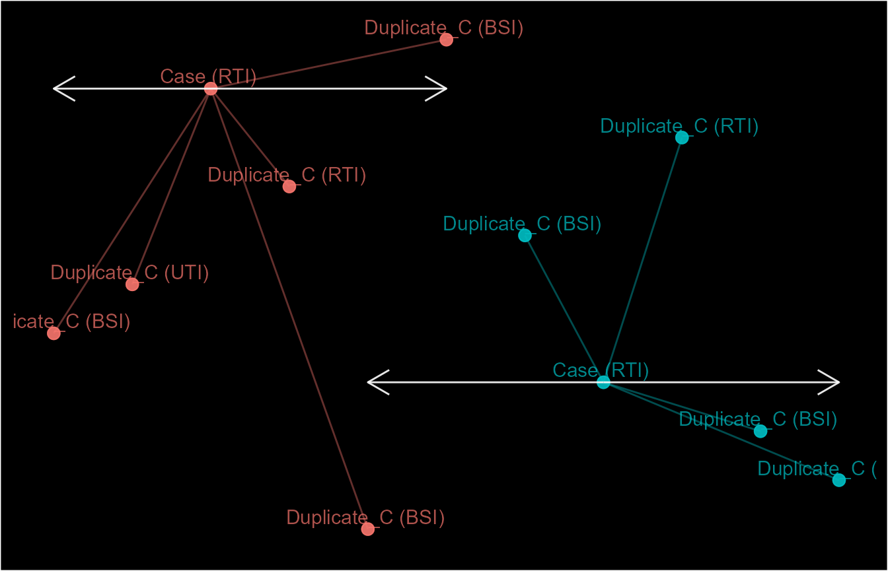
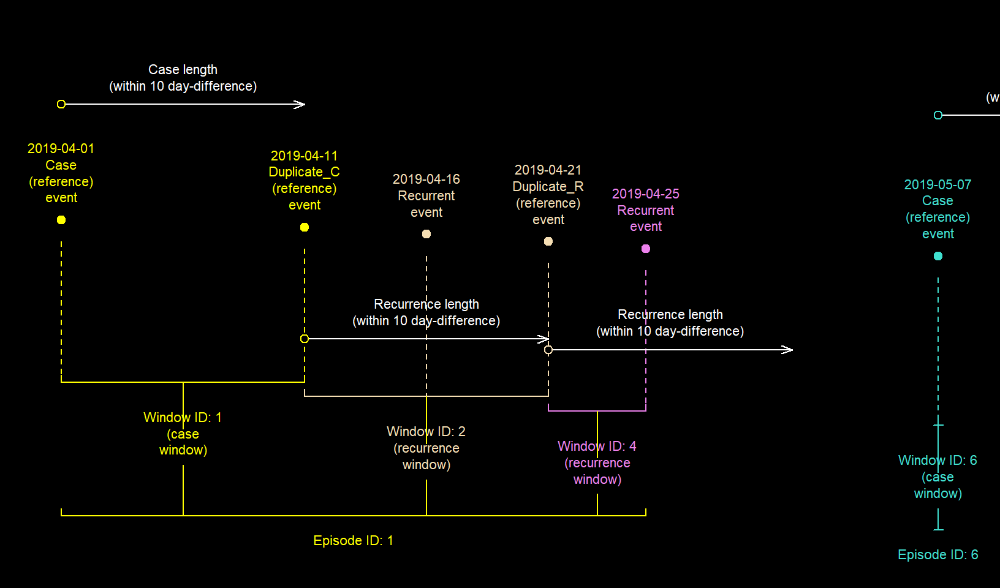
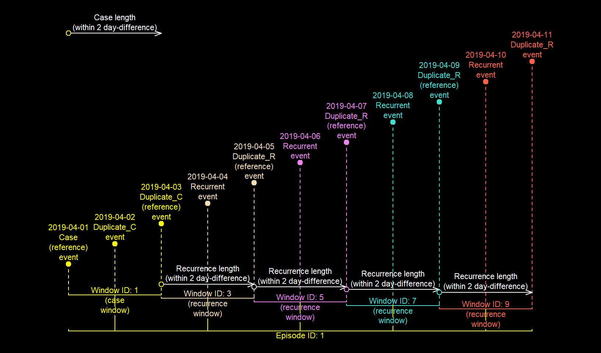

Implementing case definitions for epidemiological analysis in R
28 August 2020
Source:vignettes/episodes.Rmd
episodes.RmdIntroduction
In epidemiological analyses, an exact distinction between temporal events is not always possible. Thus, static but reasonable cut-offs are used to distinguish between events. This is an important aspect of most case definitions. For example, you may want to distinguish between repeat positive infection results. Another example is to distinguish between single-pathogen infections and co-infections.
episodes() provide a convenient but flexible way of doing this. It links events into a temporal sequence, which can you can duplicate or use for in a sub-analysis.
episode_group(), fixed_episodes() and rolling_episodes() are wrapper functions of episodes(). They exist to support code from earlier versions of diyar (< v0.2.0). Please consider using episodes() moving forward.
Uses
These functions can process a variety of case definitions. See examples below.
- episodes where events occur at single time points. For example, medical diagnoses or traffic incidents.
- episodes where events occur over a period of time e.g. hospital admission or incubation periods. See interval grouping.
- episodes where the events recur.
- episodes with known index (reference) events. See “user defined index events”.
- episodes with different durations depending on the type of event. See stratified episode tracking.
Overview
An episode as produced by episodes() is a set of events (dated records) within a specified period. Each episode begins with an index event and may contain duplicate or recurrent events. There are two types - "fixed" episodes that do not include periods of recurrence, and "rolling" episodes that do.
Implementation
Episodes, windows, case lengths and recurrence periods
Before we begin, let’s go over some terms which will pop up now and again.
-
event- a dated record i.e. single time point. -
event period-eventswith a known duration i.e. start and endpoints in time. -
reference event/period- indexevent. -
"lengths"- temporal cut-offs for distinguishing betweenevents.-
case_length- cut-off period to distinguish oneeventfrom another. -
recurrence_length- cut-off period to distinguish aneventfrom its recurrence.
-
-
window- alleventswithin the samecase_lengthorrecurrence_length-
case window- alleventswithin acase_length. -
recurrence window- alleventswithin arecurrence_length.
-
-
episode- alleventwithin the same cut-off period i.e. every overlappingwindow. -
case event- indexeventfor the entireepisode -
recurrent event- firsteventwithin arecurrence_lengthor period of recurrence. -
duplicate event- repeateventof thecaseorrecurrent event. -
episode tracking- the process of trackingeventstoepisodes.
In "fixed" episodes, each window forms a separate episode. Conversely, in "rolling" episodes overlapping windows merge into a larger one. This signifies that the episode is still on-going or has recurred. As a result, every event in both windows are considered part of the same "rolling" episode.
How to apply a case definition
epid objects
Firstly, let’s go through what episodes look like in diyar. They are stored as epid objects (S4 object class). An epid object is an episode identifier with slots for additional information about each episode.
#> events data_source epid
#> 1 2019-04-01 DS1 E.1 2019-04-01 -> 2019-04-11 (C)
#> 2 2019-04-06 DS1 E.1 2019-04-01 -> 2019-04-11 (D)
#> 3 2019-04-10 DS3 E.1 2019-04-01 -> 2019-04-11 (R)
#> 4 2019-04-11 DS1 E.1 2019-04-01 -> 2019-04-11 (D)For an epid the following information will be displayed (format.epid);
-
E.1-episodeidentifier. -
2019-04-01 -> 2019-04-11-episodeduration. Only shown ifgroup_statsisTRUE. -
(C)/(D)/(R)- type of event i.e.case,duplicateandrecurrent eventsrespectively
See ?episodes for further details.
to_df() transforms epid objects to data.frames.
#> to_df(`epid`)
#> epid sn wind_id wind_nm case_nm dist_from_wind dist_from_epid
#> 1 1 1 1 Case Case 0 days 0 days
#> 2 1 2 1 Case Duplicate_C 5 days 5 days
#> 3 1 3 2 Recurrence Recurrent 4 days 9 days
#> 4 1 4 2 Recurrence Duplicate_R 5 days 10 days
#> epid_start epid_end epid_length epid_total epid_dataset iteration
#> 1 2019-04-01 2019-04-11 10 days 4 DS1,DS3 1
#> 2 2019-04-01 2019-04-11 10 days 4 DS1,DS3 1
#> 3 2019-04-01 2019-04-11 10 days 4 DS1,DS3 2
#> 4 2019-04-01 2019-04-11 10 days 4 DS1,DS3 2cut-offs - case and recurrence lengths
Your first consideration should be a cut-off point to distinguish between episodes. Here, this is the case_length. A case_length of 5 means that; repeat events within 6 days (Time difference of 5 days) of the reference event are considered duplicates of the reference event. See below.
library(diyar) # Events ds <- c("01/04/2019", "03/04/2019", "13/04/2019","16/04/2019", "18/04/2019") ds <- data.frame(date= as.Date(ds, "%d/%m/%Y")) ds$date #> [1] "2019-04-01" "2019-04-03" "2019-04-13" "2019-04-16" "2019-04-18"
Figure 1a: fixed episodes
# 6-day (5-day difference) episodes - fixed episodes ds$f1 <- episodes(date = ds$date, case_length = 5, display = "none") #> Episode tracking completed in < 0.01 secs! ds$f1 #> [1] "E.1 (C)" "E.1 (D)" "E.3 (C)" "E.3 (D)" "E.3 (D)"
Alternatively, you can specify a cut-off range. For example, a case_length of 12 -> 16 means that; repeat events within 13 and 17 days after the reference event are considered duplicates of the reference event. Such ranges must be created with number_line(). See the number line vignette.
Figure 1b: fixed episodes with a cut-off range
rng <- number_line(12, 16); rng #> [1] "12 -> 16" ds$f2 <- episodes(date = ds$date, case_length = rng, display = "none") #> Episode tracking completed in < 0.01 secs! ds$f2 #> [1] "E.1 (C)" "E.2 (C)" "E.1 (D)" "E.1 (D)" "E.2 (D)"

events before the 13th can be skipped by changing skip_if_b4_lengths to TRUE.
Figure 1c: fixed episodes where events before the the cut-off range are not skipped
ds$f3 <- episodes(date = ds$date, case_length = rng, skip_if_b4_lengths = T, display = "none") #> Episode tracking completed in 0.6 secs! ds$f3 #> [1] "E.1 (C)" "E.2 (S)" "E.1 (D)" "E.1 (D)" "E.5 (C)"

Finally, you can use multiple case_lengths by supplying these as a list. For example, a case_length of list(5, number_line(15, 17)) means that; repeat events within 6 days, and within 16 and 18 days after the index event are considered duplicates.
Figure 1d: fixed episodes with multiple case_lengths
rngs <- list(5, number_line(15, 17)) ds$f4 <- episodes(date = ds$date, case_length = rngs, display = "none") #> Episode tracking completed in < 0.01 secs! ds$f4 #> [1] "E.1 (C)" "E.1 (D)" "E.3 (C)" "E.1 (D)" "E.1 (D)"
Note: case_lengths and recurrence_lengths are always calculated from the endpoint of an event. This has no practical implication when working with time points because the start and end points are the same. However, this is not the case for event period. See interval grouping for more information about this.
Reference events
Your next consideration should be the index (reference) event. It’s common practice for this to be the earliest event. However, there are times when the most recent event will be more appropriate. For example, the most recent positive infection result before a patient dies. This can then be the index event. You achieve this by changing from_last to TRUE. This starts episode tracking at the most recent event and proceed backwards in time.
Figure 2: fixed episodes where episode tracking was backwards in time
ds$f4 <- episodes(date = ds$date, case_length = 5, from_last = T, display = "none") #> Episode tracking completed in < 0.01 secs! ds$f4 #> [1] "E.2 (D)" "E.2 (C)" "E.5 (D)" "E.5 (D)" "E.5 (C)"
User-defined index events
Sometimes the type of event is more relevant to determining if it’s an index event. For example, determining the index infection among co-infections. Below is an example with a co-infection involving human immunodeficiency virus (HIV), hepatitis B virus (HBV) and Mycobacterium tuberculosis (MyCt).
ds2 <- data.frame(date= as.Date(c("13/03/2020", "01/04/2020","15/08/2020", "11/12/2020", "31/12/2020"), "%d/%m/%Y"), diag = c("HBV","HIV","MyCt","HBV", "MyCt"), stringsAsFactors = F) # First, make the HIV diagnosis the index event ds2$user_ord <- ifelse(ds2$diag=="HIV", 1,2) # Then track concurrent infections up to 6 months AFTER the HIV diagnosis ds2$ep1 <- episodes(date = ds2$date, custom_sort = ds2$user_ord, data_source = ds2$diag, case_length = 6, episode_unit = "months", display = "none") #> Episode tracking completed in < 0.01 secs! # Using `data_source` populates the `epid_dataset` slot of the `epid` object. # This is useful when you're working with different datasets ds2$ep1_ds <- ds2$ep1@epid_dataset # Track preceding infections up to 6 months BEFORE the HIV diagnosis ds2$ep2 <- episodes(date = ds2$date, custom_sort = ds2$user_ord, data_source = ds2$diag, case_length = -6, episode_unit = "months", display = "none") #> Episode tracking completed in < 0.01 secs! ds2$ep2_ds <- ds2$ep2@epid_dataset ds2 #> date diag user_ord ep1 ep1_ds ep2 ep2_ds #> 1 2020-03-13 HBV 2 E.1 (C) HBV E.2 (D) HBV,HIV #> 2 2020-04-01 HIV 1 E.2 (C) HIV,MyCt E.2 (C) HBV,HIV #> 3 2020-08-15 MyCt 2 E.2 (D) HIV,MyCt E.3 (C) MyCt #> 4 2020-12-11 HBV 2 E.4 (C) HBV,MyCt E.4 (C) HBV #> 5 2020-12-31 MyCt 2 E.4 (D) HBV,MyCt E.5 (C) MyCt
Notice that in ep1, the HIV diagnosis and the HBV diagnosis before it are not linked. This also happens with the HIV and MyCt diagnoses in ep2. This is because episode tracking occurs in one direction of time (from_last). If required, you can track events in both directions for time i.e. before and after an index event. You can do this by supplying an applicable cut-off range e.g. number_line(-6, 6) or list(number_line(-6, 0), number_line(0, 6)). To some extent, you can also do this with the old bi_direction argument.
See examples of each approach below.
# Track preceding and concurrent infections up to 6 months BEFORE OR AFTER the HIV diagnosis # Method 1a # Track diagnoses 6 months AFTER the HIV diagnosis. # `bi_direction` then makes the function to also check 6 months BEFORE the HIV diagnosis ds2$ep3a <- fixed_episodes(date = ds2$date, custom_sort = ds2$user_ord, case_length = 6, bi_direction = T, episode_unit = "months", display = "none") #> Episode tracking completed in 0.69 secs! # Method 1b # Track diagnoses 6 months BEFORE the HIV diagnosis # bi_direction` then makes the function to also check 6 months AFTER the HIV diagnosis ds2$ep3b <- fixed_episodes(date = ds2$date, custom_sort = ds2$user_ord, case_length = -6, bi_direction = T, episode_unit = "months", data_source = ds2$diag, display = "none") #> Episode tracking completed in 0.75 secs! # Method 2a # Track diagnoses 6 months BEFORE or AFTER the HIV diag. # There's no need for `bi_direction`. rng <- number_line(-6, 6) ds2$ep4 <- episodes(date = ds2$date, custom_sort = ds2$user_ord, case_length = rng, episode_unit = "months", data_source = ds2$diag, display = "none") #> Episode tracking completed in < 0.01 secs! # Method 2b # Track diagnoses within 1-6 months AFTER the HIV diagnosis. #` bi_direction` then makes the function to also check within 1-6 months BEFORE the HIV diagnosis # Diagnoses before 2 months on either side are skipped as mentioned in the "cut-offs" section rng2 <- number_line(1, 6) ds2$ep5 <- fixed_episodes(date = ds2$date, custom_sort = ds2$user_ord, case_length = rng2, bi_direction = T, episode_unit = "months", display = "none") #> Episode tracking completed in 1.05 secs! # Method 3a # Track diagnoses within 1-4 months AFTER the HIV diagnosis, AND # between 4-6 months # bi_direction` then makes the function to also check 2-4, and 4-6 month BEFORE the HIV diagnosis rngs <- list(number_line(1, 4), number_line(4, 6)) ds2$ep6 <- fixed_episodes(date = ds2$date, custom_sort = ds2$user_ord, case_length = rngs, bi_direction = T, episode_unit = "months", display = "none") #> Episode tracking completed in 1.67 secs! # Method 3b # Track diagnoses within 2-4 and 4-6 months BEFORE OR AFTER the HIV diagnosis # There's no need for `bi_direction`. rngs2 <- c(rngs, lapply(rngs, invert_number_line)) rngs2 #> [[1]] #> [1] "1 -> 4" #> #> [[2]] #> [1] "4 -> 6" #> #> [[3]] #> [1] "-1 <- -4" #> #> [[4]] #> [1] "-4 <- -6" ds2$ep7 <- episodes(date = ds2$date, custom_sort = ds2$user_ord, case_length = rngs2, episode_unit = "months", display = "none") #> Episode tracking completed in 0.95 secs! ds2 #> date diag user_ord ep1 ep1_ds ep2 ep2_ds ep3a ep3b #> 1 2020-03-13 HBV 2 E.1 (C) HBV E.2 (D) HBV,HIV E.2 (D) E.2 (D) #> 2 2020-04-01 HIV 1 E.2 (C) HIV,MyCt E.2 (C) HBV,HIV E.2 (C) E.2 (C) #> 3 2020-08-15 MyCt 2 E.2 (D) HIV,MyCt E.3 (C) MyCt E.2 (D) E.2 (D) #> 4 2020-12-11 HBV 2 E.4 (C) HBV,MyCt E.4 (C) HBV E.4 (C) E.4 (C) #> 5 2020-12-31 MyCt 2 E.4 (D) HBV,MyCt E.5 (C) MyCt E.4 (D) E.4 (D) #> ep4 ep5 ep6 ep7 #> 1 E.2 (D) E.1 (C) E.1 (C) E.1 (C) #> 2 E.2 (C) E.2 (C) E.2 (C) E.2 (C) #> 3 E.2 (D) E.2 (D) E.2 (D) E.2 (D) #> 4 E.4 (C) E.4 (C) E.4 (C) E.4 (C) #> 5 E.4 (D) E.5 (C) E.5 (C) E.5 (C)
Ties in preference for index events (custom_sort values) will be broken with the chronological order of those events. This will either be the earliest or most recent event depending on from_last. Alternatively, you can break such ties with extra levels of custom_sort. See ?custom_sort().
See the example below for tracking episodes using 2 and 3 levels of custom_sort.
dbf <- infections[c("date", "infection")] # 3 levels: "UTI" > "BSI" > "RTI" dbf$c_sort1 <- ifelse(dbf$infection == "UTI", 1, ifelse(dbf$infection == "BSI", 2, 3)) # 2 levels: "UTI" > ("BSI" OR "RTI") dbf$c_sort2 <- ifelse(dbf$infection == "UTI", 1, 2) # 2 levels: "BSI" > ("UTI" OR "RTI") dbf$c_sort3 <- ifelse(dbf$infection == "BSI", 1, 2) dbf$ep_1 <- episodes(date = dbf$date, case_length = 15, data_source = dbf$infection, custom_sort = dbf$c_sort1, display = "none") #> Episode tracking completed in < 0.01 secs! dbf$ep_2 <- episodes(date = dbf$date, case_length = 15, data_source = dbf$infection, custom_sort = dbf$c_sort2, display = "none") #> Episode tracking completed in < 0.01 secs! dbf$ep_3 <- episodes(date = dbf$date, case_length = 15, data_source = dbf$infection, custom_sort = dbf$c_sort3, display = "none") #> Episode tracking completed in < 0.01 secs! dbf #> date infection c_sort1 c_sort2 c_sort3 ep_1 ep_2 ep_3 #> 1 2018-04-01 BSI 2 2 1 E.01 (C) E.1 (C) E.01 (C) #> 2 2018-04-07 UTI 1 1 2 E.02 (C) E.2 (C) E.01 (D) #> 3 2018-04-13 UTI 1 1 2 E.02 (D) E.2 (D) E.01 (D) #> 4 2018-04-19 UTI 1 1 2 E.02 (D) E.2 (D) E.04 (C) #> 5 2018-04-25 BSI 2 2 1 E.05 (C) E.5 (C) E.05 (C) #> 6 2018-05-01 UTI 1 1 2 E.06 (C) E.6 (C) E.05 (D) #> 7 2018-05-07 BSI 2 2 1 E.06 (D) E.6 (D) E.05 (D) #> 8 2018-05-13 BSI 2 2 1 E.06 (D) E.6 (D) E.08 (C) #> 9 2018-05-19 RTI 3 2 2 E.09 (C) E.9 (C) E.08 (D) #> 10 2018-05-25 RTI 3 2 2 E.09 (D) E.9 (D) E.08 (D) #> 11 2018-05-31 BSI 2 2 1 E.11 (C) E.9 (D) E.11 (C)
custom_sort() is convenience function for nested sorting. This will help you merge custom_sort orders into one atomic vector. See the examples below.
dbf$uti <- ifelse(dbf$infection == "UTI", 1, 2) dbf$bsi <- ifelse(dbf$infection == "BSI", 1, 2) dbf$rti <- ifelse(dbf$infection == "RTI", 1, 2) # 3 levels: "UTI" > "BSI" > "RTI" dbf$c_sort1b <- custom_sort(dbf$uti, dbf$bsi, dbf$rti) dbf$ep_1b <- episodes(date = dbf$date, case_length = 15, data_source = dbf$infection, custom_sort = dbf$c_sort1b, display = "none") #> Episode tracking completed in < 0.01 secs! # Same results dbf[c("ep_1", "ep_1b")] #> ep_1 ep_1b #> 1 E.01 (C) E.01 (C) #> 2 E.02 (C) E.02 (C) #> 3 E.02 (D) E.02 (D) #> 4 E.02 (D) E.02 (D) #> 5 E.05 (C) E.05 (C) #> 6 E.06 (C) E.06 (C) #> 7 E.06 (D) E.06 (D) #> 8 E.06 (D) E.06 (D) #> 9 E.09 (C) E.09 (C) #> 10 E.09 (D) E.09 (D) #> 11 E.11 (C) E.11 (C)
Recurrent events and periods of recurrence
Some case definition may specify that events recur ("rolling" episodes). For example, relapses of the same infection after successful treatment. It may be important to treat this as the same episode of the initial infection. This differs from a "fixed" episode, where the relapse is handled as a separate episode.
The recurrence_length argument provides the cut-off period for recurrent events. For example, a recurrence_length of 10 means that; repeat events within 11 days of the last duplicate event (of the initial index event) are considered a recurrence of the index event.
If recurrence_length is not supplied, it’s assumed to be the same as the case_length.
Figure 3a: rolling episodes
# 6-day (5-day difference) episodes with 11-days recurrence periods - rolling episodes ds$r1 <- episodes(date = ds$date, case_length = 5, recurrence_length = 10, episode_type = "rolling", display = "none") #> Episode tracking completed in < 0.01 secs! ds$r1 #> [1] "E.1 (C)" "E.1 (D)" "E.1 (R)" "E.1 (R)" "E.1 (D)"

Similarly, for recurrence_length, you can use a cut-off range. For example, a recurrence_length of 13 -> 15 means that; repeat events between 14 and 16 days after the last duplicate event are considered a recurrence of the index event.
Figure 3b: rolling episodes with a cut-off range
rng <- number_line(13, 15); rng #> [1] "13 -> 15" ds$r2 <- episodes(date = ds$date, case_length = 5, recurrence_length = rng, episode_type = "rolling", display = "none") #> Episode tracking completed in 0.7 secs! ds$r2 #> [1] "E.1 (C)" "E.1 (D)" "E.3 (C)" "E.1 (R)" "E.1 (D)"
You can skip events before the 14th by changing skip_if_b4_lengths to TRUE.
Figure 3c: rolling episodes where events before the the cut-off range are not skipped
rng <- number_line(13, 15); rng #> [1] "13 -> 15" ds$r3 <- episodes(date = ds$date, case_length = 5, recurrence_length = rng, skip_if_b4_lengths = F, episode_type = "rolling", display = "none") #> Episode tracking completed in 0.78 secs! ds$r3 #> [1] "E.1 (C)" "E.1 (D)" "E.3 (C)" "E.1 (R)" "E.1 (D)"

As with case_length, you can supply multiple recurrence_lengths as a list.
Figure 3d: rolling episodes with multiple recurrence_lengths
rngs <- list(number_line(13, 14), number_line(15,18)); rngs #> [[1]] #> [1] "13 -> 14" #> #> [[2]] #> [1] "15 -> 18" ds$r4 <- episodes(date = ds$date, case_length = 5, recurrence_length = rngs, skip_if_b4_lengths = F, episode_type = "rolling", display = "none") #> Episode tracking completed in 0.92 secs! ds$r4 #> [1] "E.1 (C)" "E.1 (D)" "E.3 (C)" "E.1 (R)" "E.1 (D)"
Index events for periods of recurrence
Each "rolling" episode has at least two index-events. one for the whole episode and one for each period of recurrence. By default, the last event of the previous window is the index event for the next period of recurrence. Changing recurrence_from_last to FALSE, specifies that the first event in the previous window is used. See a demonstration of this below.
If the case_length is the same the recurrence_length and you’ll create a "fixed" episode.
df <- c("01/04/2019", "11/04/2019", "16/04/2019","21/04/2019", "07/05/2019") df <- data.frame(date= as.Date(df, "%d/%m/%Y")) # 15-day fixed episodes are the same as 15-day rolling episodes where `recurrence_from_last` is FALSE df$f1 <- episodes(date = df$date, case_length = 14, display = "none") #> Episode tracking completed in < 0.01 secs! df$r1 <- episodes(date = df$date, case_length = 14, recurrence_from_last = F, episode_type = "rolling", display = "none") #> Episode tracking completed in 0.71 secs! df #> date f1 r1 #> 1 2019-04-01 E.1 (C) E.1 (C) #> 2 2019-04-11 E.1 (D) E.1 (D) #> 3 2019-04-16 E.3 (C) E.3 (C) #> 4 2019-04-21 E.3 (D) E.3 (D) #> 5 2019-05-07 E.5 (C) E.5 (C)
Figure 4a: Last event in a window taken as the reference event for the next recurrence window (default)
df$r2 <- episodes(date = df$date, case_length = 14, recurrence_length = 16, episode_type = "rolling", display = "none") #> Episode tracking completed in < 0.01 secs! df$r2 #> [1] "E.1 (C)" "E.1 (D)" "E.1 (R)" "E.1 (D)" "E.1 (R)"
Figure 4b: First event in a window taken as the reference event for the next recurrence window
df$r3 <- episodes(date = df$date, case_length = 14, recurrence_length = 16, recurrence_from_last = F, episode_type = "rolling", display = "none") #> Episode tracking completed in 0.63 secs! df$r3 #> [1] "E.1 (C)" "E.1 (D)" "E.1 (R)" "E.1 (R)" "E.1 (R)"
Case windows for both case and recurrent events
You can use the case_for_recurrence argument to specify that both case and recurrence events should have a case window. The default behaviour is that only case events have a case window. See a demonstration of this below.
The wind_id slot shows the window of every event, while wind_nm shows what type of window it is.
Example 1
df <- c("01/04/2019", "11/04/2019", "16/04/2019","21/04/2019","25/04/2019", "07/05/2019") df <- data.frame(date= as.Date(df, "%d/%m/%Y"))
Figure 5a: Case windows for case events only (default)
df$r4 <- episodes(date = df$date, case_length = 10, episode_type = "rolling", display = "none") #> Episode tracking completed in 0.69 secs! df$r4 #> [1] "E.1 (C)" "E.1 (D)" "E.1 (R)" "E.1 (D)" "E.1 (R)" "E.6 (C)"

Figure 5b: Case windows for case and recurrence events
df$r5 <- episodes(date = df$date, case_length = 10, episode_type = "rolling", case_for_recurrence = T, display = "none") #> Episode tracking completed in 0.67 secs! df$r5 #> [1] "E.1 (C)" "E.1 (D)" "E.1 (R)" "E.1 (D)" "E.1 (D)" "E.6 (C)"
Example 2
date <- seq.Date(as.Date("01/04/2019", "%d/%m/%Y"), as.Date("21/04/2019","%d/%m/%Y"), by="3 day") # Example 2 df2 <- data.frame(date = date, sn = 1:length(date)) # dates df2$date #> [1] "2019-04-01" "2019-04-04" "2019-04-07" "2019-04-10" "2019-04-13" #> [6] "2019-04-16" "2019-04-19"
Figure 5c: Case windows for case events only (default)
df2$r1 <- episodes(date = df2$date, case_length = 6, recurrence_length = 4, sn=df2$sn, episode_type = "rolling", display = "none") #> Episode tracking completed in 0.68 secs! df2$r1 #> [1] "E.1 (C)" "E.1 (D)" "E.1 (D)" "E.1 (R)" "E.1 (R)" "E.1 (R)" "E.1 (R)"
Figure 5d: Case windows for case and recurrence events
df2$r2 <- episodes(date = df2$date, case_length = 6, recurrence_length = 4, case_for_recurrence = T, sn=df2$sn, episode_type = "rolling", display = "none") #> Episode tracking completed in 0.62 secs! df2$r1 #> [1] "E.1 (C)" "E.1 (D)" "E.1 (D)" "E.1 (R)" "E.1 (R)" "E.1 (R)" "E.1 (R)"
Notice that in the 4 examples, all events have been assigned to the same episode but the number of recurrent events differs.
Number of recurrence periods and episodes
Some case definitions may only need you to track the first n-number of episodes or specify that they only recur n-number of times. You can incorporate these requirements into your analyses using episodes_max and rolls_max respectively. When each strata (see stratified episode tracking) of the dataset has the maximum number of episodes as specified by episodes_max, subsequent events are skipped. The default option for episodes_max is Inf i.e. continue episode tracking until every event is linked to an episode. See the examples below.
data("infections_3"); dbs <- infections_3[c("pid","date")]; # dates dbs$date #> [1] "2019-04-01" "2019-04-02" "2019-04-03" "2019-04-04" "2019-04-05" #> [6] "2019-04-06" "2019-04-07" "2019-04-08" "2019-04-09" "2019-04-10" #> [11] "2019-04-11"
Figure 6a: Maximum of one fixed episode per strata
dbs$eps_1 <- episodes(strata = dbs$pid, date = dbs$date, case_length = 3, episodes_max = 1, display = "none") #> Episode tracking completed in < 0.01 secs! dbs$eps_1 #> [1] "E.01 (C)" "E.01 (D)" "E.01 (D)" "E.01 (D)" "E.05 (S)" "E.06 (S)" #> [7] "E.07 (S)" "E.08 (S)" "E.09 (S)" "E.10 (S)" "E.11 (S)"
Figure 6b: Maximum of two fixed episodes per strata
dbs$eps_2 <- episodes(strata = dbs$pid, date = dbs$date, case_length = 3, episodes_max = 2, display = "none") #> Episode tracking completed in < 0.01 secs! dbs$eps_2 #> [1] "E.01 (C)" "E.01 (D)" "E.01 (D)" "E.01 (D)" "E.05 (C)" "E.05 (D)" #> [7] "E.05 (D)" "E.05 (D)" "E.09 (S)" "E.10 (S)" "E.11 (S)"
rolls_max is the maximum number of times an event can recur. This is when a "rolling" episode ends. A new one will only begin if the number of episodes in that strata is less than episode_max. The default option for rolls_max is Inf i.e. continue tracking recurrent events until there are no more events within the recurrence period of the reference event. See the examples below.
Figure 6c: Infinite recurrence periods per episode per strata (default)
dbs$eps_4 <- episodes(strata = dbs$pid, date = dbs$date, case_length = 2, episode_type = "rolling", display = "none") #> Episode tracking completed in 0.82 secs! dbs$eps_4 #> [1] "E.1 (C)" "E.1 (D)" "E.1 (D)" "E.1 (R)" "E.1 (D)" "E.1 (R)" "E.1 (D)" #> [8] "E.1 (R)" "E.1 (D)" "E.1 (R)" "E.1 (D)"

Figure 6d: Maximum of one recurrence period per episode per strata
dbs$eps_6 <- episodes(strata = dbs$pid, date = dbs$date, case_length = 2, episode_type = "rolling", rolls_max = 1, display = "none") #> Episode tracking completed in 0.81 secs! dbs$eps_6 #> [1] "E.01 (C)" "E.01 (D)" "E.01 (D)" "E.01 (R)" "E.01 (D)" "E.06 (C)" #> [7] "E.06 (D)" "E.06 (D)" "E.06 (R)" "E.06 (D)" "E.11 (C)"
Note that after tracking the last recurrent event, the function will also check for duplicates within the case window of the last recurrent event. See below.
Figure 6e: Maximum of one recurrence period per episode per strata when case_for_recurrence is TRUE
dbs$eps_7 <- episodes(strata = dbs$pid, date = dbs$date, case_length = 2, episode_type = "rolling", rolls_max = 1, case_for_recurrence = T, display = "none") #> Episode tracking completed in 0.75 secs! dbs$eps_7 #> [1] "E.1 (C)" "E.1 (D)" "E.1 (D)" "E.1 (R)" "E.1 (D)" "E.1 (D)" "E.1 (D)" #> [8] "E.8 (C)" "E.8 (D)" "E.8 (D)" "E.8 (R)"
Interval grouping
Some case definitions can involve events that occur over a defined period e.g. hospital admissions. episodes() can track such event periods into episodes. This type of episode tracking is recommended when the endpoint of an event is known. For instance, it’s near impossible to know the exact point in time an individual diagnosed with the common cold recovers however, it’s a reasonable assumption that another diagnosis 3 months after the initial one is not the same infection. For situations like this, the recommended approach is to use the methods we’ve covered so far. In contrast, hospital admissions typically have recorded admission and discharge times or dates, and so interval grouping is recommended for tracking such events. This being said, in several situations both approaches can be used interchangeably. See below.
# Dates dates <- seq(as.Date("01/04/2019", "%d/%M/%Y"), as.Date("20/04/2019", "%d/%M/%Y"), "4 days") # Periods periods <- number_line(dates, dates + 4) dates #> [1] "2019-08-01" "2019-08-05" "2019-08-09" "2019-08-13" "2019-08-17" periods #> [1] "2019-08-01 -> 2019-08-05" "2019-08-05 -> 2019-08-09" #> [3] "2019-08-09 -> 2019-08-13" "2019-08-13 -> 2019-08-17" #> [5] "2019-08-17 -> 2019-08-21" # Track fixed episodes from events with a 5 day cut-off mth1 <- episodes(date = dates, case_length = 4, display = "none") #> Episode tracking completed in < 0.01 secs! # Track fixed episodes from periods that are 5 days long mth2 <- episodes(date = periods, case_length = 0, display = "none") #> Episode tracking completed in < 0.01 secs! # Same results mth1; mth2 #> [1] "E.1 (C)" "E.1 (D)" "E.3 (C)" "E.3 (D)" "E.5 (C)" #> [1] "E.1 (C)" "E.1 (D)" "E.3 (C)" "E.3 (D)" "E.5 (C)" # Track rolling episodes from events using a 5 day cut-off mth3 <- episodes(date = dates, case_length = 4, episode_type = "rolling", display = "none") #> Episode tracking completed in 0.62 secs! # Track rolling episode from periods that are 5 days long mth4 <- episodes(date = periods, case_length = 0, episode_type = "rolling", display = "none") #> Episode tracking completed in 0.56 secs! # Same results mth3; mth4 #> [1] "E.1 (C)" "E.1 (D)" "E.1 (R)" "E.1 (R)" "E.1 (R)" #> [1] "E.1 (C)" "E.1 (D)" "E.1 (R)" "E.1 (R)" "E.1 (R)"
As mentioned earlier, case_length and recurrence_lengths are calculated from the endpoints of events period. Therefore, a case_length of 5 is actually the period within 6 days (day difference of 5) of the endpoint. See examples of this below.
event_period <- number_line(as.Date("01/04/2019", "%d/%m/%Y"), as.Date("10/04/2019", "%d/%m/%Y")) event_period #> [1] "2019-04-01 -> 2019-04-10" # Case_length of 5 translates to; epid_windows(event_period, 5) #> [1] "2019-04-10 -> 2019-04-15" # Case_length of 0 translates to; epid_windows(event_period, 0) #> [1] "2019-04-10 == 2019-04-10" # Case_length of -1 translates to; epid_windows(event_period, -1) #> [1] "2019-04-10 <- 2019-04-09" # Case_length of -5 translates to; epid_windows(event_period, -5) #> [1] "2019-04-10 <- 2019-04-05" # Case_length of `index_window(x)` translates to; epid_windows(event_period, index_window(event_period)) #> [1] "2019-04-01 -> 2019-04-10"
In interval grouping, event_period that overlap with the index event period are linked together as an episode.
hos_admin <- diyar::hospital_admissions hos_admin$admin_period <- number_line(hos_admin$admin_dt, hos_admin$discharge_dt) # Hospital stay hos_admin$admin_period #> [1] "2019-01-01 == 2019-01-01" "2019-01-01 -> 2019-01-10" #> [3] "2019-01-10 -> 2019-01-13" "2019-01-05 -> 2019-01-06" #> [5] "2019-01-05 -> 2019-01-15" "2019-01-07 -> 2019-01-15" #> [7] "2019-01-04 -> 2019-01-13" "2019-01-20 -> 2019-01-30" #> [9] "2019-01-26 -> 2019-01-31" "2019-01-01 -> 2019-01-10" #> [11] "2019-01-20 -> 2019-01-30"
Figure 7a: Tracking periods of hospital stay (admission -> discharge)
hs_epids_a <- episodes(date = hos_admin$admin_period, case_length = list(0, index_window(hos_admin$admin_period)), group_stats = T, display = "none") #> Episode tracking completed in < 0.01 secs!
Figure 7b: Tracking periods of hospital stay up to 20 days after the first discharge
hs_epids_b <- episodes(date=hos_admin$admin_period, list(20, index_window(hos_admin$admin_period)), group_stats = T, display = "none") #> Episode tracking completed in < 0.01 secs!
Figure 7c: Tracking periods of continuous hospital stay i.e. re-admission within 15 days
hs_epids_c <- episodes(date=hos_admin$admin_period, case_length = list(0, index_window(hos_admin$admin_period)), recurrence_length = list(15, index_window(hos_admin$admin_period)), episode_type = "rolling", group_stats = T, display = "none") #> Episode tracking completed in 0.56 secs!
There are 7 ways event periods can overlap (overlap_methods_c/overlap_methods_r). These are "exact", "reverse", "across", "inbetween", "chain", "aligns_start" and "aligns_end". These are covered in more detail in an accompanying vignette. You can specify that only event periods which overlap in a certain way should be linked as episodes. See below for a demonstration of this.
The 7 overlap_methods are mutually exclusive.
There are 2 convenience methods - "none" and "overlap". These are mutually inclusive with the others, and so are prioritised.
epi_grp_func <- function(x){ epids <- episodes(date=hos_admin$admin_period, sn=hos_admin$rd_id, case_length = index_window(hos_admin$admin_period), overlap_methods_c = x, group_stats = T, display = "none") # for this demonstration, limit to overlapped periods epids[epids@epid_total>1] } # Methods methods <- list( # Identical intervals exact = "exact", # Overlapping intervals across= "across", # Intervals with aligned start points aligns_start = "aligns_start", # Intervals with aligned endpoints aligns_end = "aligns_end", # Chained intervals chain = "chain", # Intervals occurring completely within others inbetween = "inbetween", # Chained intervals and those occurring completely within others cb1 = "chain|inbetween", # Chained intervals, identical intervals and those occurring completely within others cb2 = "exact|chain|inbetween", # Chained intervals, overlapping intervals and those with aligned endpoint cb3 = "across|chain|aligns_end" ) epids <- lapply(methods, epi_grp_func) #> Episode tracking completed in 0.73 secs! #> Episode tracking completed in 0.85 secs! #> Episode tracking completed in 0.62 secs! #> Episode tracking completed in 0.63 secs! #> Episode tracking completed in 0.7 secs! #> Episode tracking completed in 0.98 secs! #> Episode tracking completed in 0.65 secs! #> Episode tracking completed in 0.55 secs! #> Episode tracking completed in 0.85 secs! names(epids) <- names(methods) # Results epids["chain"] #> $chain #> [1] "E.2 2019-01-01 -> 2019-01-13 (C)" "E.2 2019-01-01 -> 2019-01-13 (D)" epids["cb2"] #> $cb2 #> [1] "E.2 2019-01-01 -> 2019-01-13 (C)" "E.2 2019-01-01 -> 2019-01-13 (D)" #> [3] "E.2 2019-01-01 -> 2019-01-13 (D)" "E.8 2019-01-20 -> 2019-01-30 (C)" #> [5] "E.2 2019-01-01 -> 2019-01-13 (D)" "E.8 2019-01-20 -> 2019-01-30 (D)"
Only showing events that have been linked as episodes
Figure 8a: Episodes when considering only “exact” overlap method
Figure 8b: Episodes when considering only “chain” overlap method
Figure 8c: Episodes when considering “chain” or “inbetween” overlap method
By default, overlap_methods is a record-level argument. This means that the option that’ll be used is that of each event (record). See below.
x <- c(number_line(1, 5), number_line(1, 5), number_line(2, 3), 1) m <- c("aligns_start", "exact", "inbetween", "aligns_start") dfe <- data.frame(x = x, m = m) dfe$eps_1 <- episodes(date = dfe$x, case_length = index_window(dfe$x), overlap_methods_c = dfe$m) #> Episode tracking completed in < 0.01 secs! dfe #> x m eps_1 #> 1 1 -> 5 aligns_start E.1 (C) #> 2 1 -> 5 exact E.1 (D) #> 3 2 -> 3 inbetween E.1 (D) #> 4 1 == 1 aligns_start E.1 (D)
However, you can use it as an episode-level argument. This means that the option that’ll be used is that of the index event. Finally, you can use it as both a record-level and episode-level argument. You do these by supplying overlap_methods as a named list - r for record-level, e for record-level or b for both. See below.
dfe$eps_2 <- episodes(date = dfe$x, case_length = index_window(dfe$x), overlap_methods_c = list(e = dfe$m)) #> Episode tracking completed in < 0.01 secs! dfe$eps_3 <- episodes(date = dfe$x, case_length = index_window(dfe$x), overlap_methods_c = list(b = dfe$m)) #> Episode tracking completed in < 0.01 secs! dfe #> x m eps_1 eps_2 eps_3 #> 1 1 -> 5 aligns_start E.1 (C) E.1 (C) E.1 (C) #> 2 1 -> 5 exact E.1 (D) E.2 (C) E.1 (D) #> 3 2 -> 3 inbetween E.1 (D) E.3 (C) E.1 (D) #> 4 1 == 1 aligns_start E.1 (D) E.1 (D) E.1 (D)
Case and recurrence lengths in interval grouping
pa <- c("28/03/2019", "01/04/2019", "03/04/2019", "07/04/2019","12/04/2019") pz <- c("31/03/2019", "10/04/2019", "05/04/2019", "09/04/2019","13/04/2019") pa <- as.Date(pa, "%d/%m/%Y") pz <- as.Date(pz, "%d/%m/%Y") periods <- number_line(pa, pz) periods #> [1] "2019-03-28 -> 2019-03-31" "2019-04-01 -> 2019-04-10" #> [3] "2019-04-03 -> 2019-04-05" "2019-04-07 -> 2019-04-09" #> [5] "2019-04-12 -> 2019-04-13"
As seen earlier, a positive “length” means that; event periods within n-days AFTER the end_point() of the index event period will be linked to the same episode. See another example below.
Figure 9a: Fixed episodes with a case_length of 6
eps_a <- episodes(date = periods, case_length = 6, group_stats = T, display = "none") #> Episode tracking completed in < 0.01 secs! eps_a #> [1] "E.1 2019-03-28 -> 2019-04-10 (C)" "E.1 2019-03-28 -> 2019-04-10 (D)" #> [3] "E.1 2019-03-28 -> 2019-04-10 (D)" "E.4 2019-04-07 -> 2019-04-13 (C)" #> [5] "E.4 2019-04-07 -> 2019-04-13 (D)"
In contrast, a negative “length” means that; only event periods within n-days BEFORE the end_point() of the index event period will be linked to the same episode.
Figure 9b: Fixed episodes with a case_length of -2
eps_b <- episodes(date = periods, case_length = -2, group_stats = T, display = "none") #> Episode tracking completed in < 0.01 secs! eps_b #> [1] "E.1 2019-03-28 -> 2019-03-31 (C)" "E.2 2019-04-01 -> 2019-04-10 (C)" #> [3] "E.3 2019-04-03 -> 2019-04-05 (C)" "E.2 2019-04-01 -> 2019-04-10 (D)" #> [5] "E.5 2019-04-12 -> 2019-04-13 (C)"
To include those that overlap with the index event itself, supply the corresponding case_length or recurrence_lenght. index_window() is handy for doing this. You can also achieve this with the old include_index_period argument. See below.
Figure 9c: Fixed episodes with a case_length of -2
eps_c <- episodes(date = periods, case_length = list(-2, index_window(periods)), group_stats = T, display = "none") #> Episode tracking completed in < 0.01 secs! eps_c #> [1] "E.1 2019-03-28 -> 2019-03-31 (C)" "E.2 2019-04-01 -> 2019-04-10 (C)" #> [3] "E.2 2019-04-01 -> 2019-04-10 (D)" "E.2 2019-04-01 -> 2019-04-10 (D)" #> [5] "E.5 2019-04-12 -> 2019-04-13 (C)"
Figure 9d: Fixed episodes with a case_length of -6
eps_d <- episodes(date = periods, case_length =-6, group_stats = T, display = "none") #> Episode tracking completed in < 0.01 secs! eps_d #> [1] "E.1 2019-03-28 -> 2019-03-31 (C)" "E.2 2019-04-01 -> 2019-04-10 (C)" #> [3] "E.2 2019-04-01 -> 2019-04-10 (D)" "E.2 2019-04-01 -> 2019-04-10 (D)" #> [5] "E.5 2019-04-12 -> 2019-04-13 (C)"
Stratified episode tracking
You’ll usually want to track episodes separately within different groups (strata). For example patients, pathogens, sources of infection or any combination of these. This results in episodes from one strata being different from others.
episodes from different strata can have different case_lengths and/or recurrence_lengths.
links() is useful for creating group identifiers which can then be used as a strata. See the links vignette for further details.
As an example, using the infections dataset, a case definition may specify the following;
- UTI and BSI diagnoses are considered different
episodesregardless of when they occur - UTI
episodeshave a cut-off of 8 days and a recurrence period of 31 days - BSI
episodeshave a cut-off of 15 days and no recurrence period
By adding the infection column to the strata argument, "UTI" and "BSI" diagnoses will not be linked to the same episode. Furthermore, the case_length and recurrence_length for each will be different as specified in the epi and recur columns respectively.
dbs <- diyar::infections[c("date","infection")] dbs <- dbs[dbs$infection%in% c("UTI","BSI"),] dbs$epi <- ifelse(dbs$infection=="UTI", 7, 14) dbs$recur <- ifelse(dbs$infection=="UTI", 30, 0) dbs$epids <- episodes(date = dbs$date, case_length = dbs$epi, episode_type = "rolling", strata = dbs$infection, recurrence_length = dbs$recur, group_stats = TRUE, display = "none") #> Episode tracking completed in 1.07 secs! dbs #> date infection epi recur epids #> 1 2018-04-01 BSI 14 0 E.1 2018-04-01 == 2018-04-01 (C) #> 2 2018-04-07 UTI 7 30 E.2 2018-04-07 -> 2018-05-01 (C) #> 3 2018-04-13 UTI 7 30 E.2 2018-04-07 -> 2018-05-01 (D) #> 4 2018-04-19 UTI 7 30 E.2 2018-04-07 -> 2018-05-01 (R) #> 5 2018-04-25 BSI 14 0 E.5 2018-04-25 -> 2018-05-07 (C) #> 6 2018-05-01 UTI 7 30 E.2 2018-04-07 -> 2018-05-01 (D) #> 7 2018-05-07 BSI 14 0 E.5 2018-04-25 -> 2018-05-07 (D) #> 8 2018-05-13 BSI 14 0 E.8 2018-05-13 == 2018-05-13 (C) #> 11 2018-05-31 BSI 14 0 E.9 2018-05-31 == 2018-05-31 (C)
Sub-strata
Sub-strata is when events within the same strata have different cut-offs. The case definition below demonstrates how this can be beneficial.
- UTI and BSI diagnoses are considered different
episodesregardless of when they occur - UTI diagnoses have a cut-off of 8 days and a recurrence period of 31 days
- BSI diagnoses have a cut-off of 15 days if not treated but 5 days if
treated. In both situations, there is no recurrence period. - RTI diagnoses have a cut-off of 29 days and a recurrence period of 6 days
In this example, whether the infection is treated should be viewed as the sub-strata i.e. in a patient (strata), an episode is expected to last longer if it’s not treated.
dbs <- diyar::infections_4 dbs$epids <- episodes(strata= paste(dbs$pid, dbs$organism, dbs$source), date= dbs$date, case_length = dbs$epi, episode_type = "rolling", recurrence_length = dbs$recur, display = "none") #> Episode tracking completed in 0.9 secs! dbs #> rid date pid organism source treated epi recur epids #> 1 1 2019-04-01 1 E. coli UTI - 7 30 E.01 (C) #> 2 2 2019-04-06 1 E. coli UTI - 7 30 E.01 (D) #> 3 3 2019-04-11 1 E. coli BSI Y 4 0 E.03 (C) #> 4 4 2019-04-16 1 E. coli BSI N 14 0 E.04 (C) #> 5 5 2019-04-21 1 E. coli BSI Y 4 0 E.04 (D) #> 6 6 2019-04-26 1 E. coli RTI Y 28 5 E.06 (C) #> 7 7 2019-05-01 1 E. coli RTI N 28 5 E.06 (D) #> 8 8 2019-05-06 1 E. coli BSI Y 4 0 E.08 (C) #> 9 9 2019-05-11 1 E. coli BSI N 14 0 E.09 (C) #> 10 10 2019-05-16 1 E. coli UTI N 7 30 E.10 (C) #> 11 11 2019-05-21 1 E. coli UTI N 7 30 E.10 (D)
There are a few things to note with stratified episode tracking;
- Unless required,
case_lengthandrecurrence_lengthshould be consistent within eachstrataotherwise, you’ll inadvertently create a sub-strata -
Episode trackingwith and without a sub-strata are different and could lead to different results - Using a
sub-stratais not the same as adding thatsub-stratato thestrataargument. Addingtreatedto thestrataargument will tracktreatedinfections separately from untreated infections. While this could be the desired outcome in certain situations, the case definition above only requires thattreatedinfections last longer.
Cut down your processing time
Some case definitions are so specific that they only cover certain kinds of episodes. In such situations, you can save time by skipping events from episodes that you won’t need. There are 3 ways to skip such events.
Skipped events are assigned unique episode IDs and are flagged as "Skipped".
Skip subsets of the dataset
You can skip an entire strata of the dataset by changing it to NA. Assuming you are not interested in tracking "GP1" and "GP2" records, you can skip these to save time.
dbs <- head(hourly_data[c("datetime","category")], 10) dbs$subset <- ifelse(dbs$category!="GP3", NA, "group") # To skip OR dbs$epids_a <- episodes(strata= dbs$subset, date = dbs$datetime, case_length = 5, episode_unit = "hours", recurrence_length = 9, episode_type = "rolling", display = "none") #> Episode tracking completed in < 0.01 secs! # OR # Not to skip dbs$epids_b <- episodes(strata= dbs$category, date = dbs$datetime, case_length = 5, episode_unit = "hours", recurrence_length = 9, episode_type = "rolling", display = "none") #> Episode tracking completed in < 0.01 secs! dbs #> datetime category subset epids_a epids_b #> 1 2019-04-01 00:03:20 GP1 <NA> E.1 (S) E.1 (C) #> 2 2019-04-01 02:08:20 GP2 <NA> E.2 (S) E.2 (C) #> 3 2019-04-01 04:01:40 GP1 <NA> E.3 (S) E.1 (D) #> 4 2019-04-01 06:05:45 GP2 <NA> E.4 (S) E.2 (D) #> 5 2019-04-01 08:03:52 GP1 <NA> E.5 (S) E.1 (R) #> 6 2019-04-01 10:08:52 GP2 <NA> E.6 (S) E.2 (R) #> 7 2019-04-01 12:06:50 GP1 <NA> E.7 (S) E.1 (D) #> 8 2019-04-01 14:03:35 GP2 <NA> E.8 (S) E.2 (D) #> 9 2019-04-01 16:03:42 GP3 group E.9 (C) E.9 (C) #> 10 2019-04-01 18:01:52 GP3 group E.9 (D) E.9 (D)
Skip the nth order (skip order) of custom sort
You can skip episodes when there are different levels of custom_sort. A skip_order of 1 means that; after every event with the first level of your custom_sort has been linked to episodes, the tracking process will end.
This is handy when you’re tracking episodes from rare and common events, the rare events are the index events and it’s a hassle to subset the dataset.
dbf <- dbf[c("date", "infection")] dbf$c_sort <- ifelse(dbf$infection == "UTI", 1, ifelse(dbf$infection == "BSI", 2, 3)) # Skip episodes that would begin with BSI/UTI records dbf$ep_a <- episodes(date = dbf$date, case_length = 15, data_source = dbf$infection, custom_sort = dbf$c_sort, skip_order = 1, display = "none") #> Episode tracking completed in < 0.01 secs! dbf$ep_a_d <- dbf$ep_a@epid_dataset # Don't skip any episodes dbf$ep_b <- episodes(date = dbf$date, case_length = 15, data_source = dbf$infection, custom_sort = dbf$c_sort, display = "none") #> Episode tracking completed in < 0.01 secs! dbf$ep_b_d <- dbf$ep_b@epid_dataset dbf #> date infection c_sort ep_a ep_a_d ep_b ep_b_d #> 1 2018-04-01 BSI 2 E.01 (S) BSI E.01 (C) BSI #> 2 2018-04-07 UTI 1 E.02 (S) UTI E.02 (C) UTI #> 3 2018-04-13 UTI 1 E.03 (S) UTI E.02 (D) UTI #> 4 2018-04-19 UTI 1 E.04 (S) UTI E.02 (D) UTI #> 5 2018-04-25 BSI 2 E.05 (S) BSI E.05 (C) BSI #> 6 2018-05-01 UTI 1 E.06 (S) UTI E.06 (C) BSI,UTI #> 7 2018-05-07 BSI 2 E.07 (S) BSI E.06 (D) BSI,UTI #> 8 2018-05-13 BSI 2 E.08 (S) BSI E.06 (D) BSI,UTI #> 9 2018-05-19 RTI 3 E.09 (S) RTI E.09 (C) RTI #> 10 2018-05-25 RTI 3 E.10 (S) RTI E.09 (D) RTI #> 11 2018-05-31 BSI 2 E.11 (S) BSI E.11 (C) BSI
Notice that in the skipped example (ep_a), no episode begins with either a "BSI" or "RTI" record.
Skip episodes without records from certain data sources
The third mechanism is partly a misnomer. episodes that do not contain records from certain data_sources are unlinked not skipped. A strata without the required combination of data_sources will be skipped.
dttm <- function(x) as.POSIXct(x, "UTC", nformat="%d/%m/%Y %H:%M:%S") dbg <- data.frame(date = seq.POSIXt(dttm("01/04/2018 00:00:00"), dttm("31/05/2018 00:00:00"), by = "3 days")) dbg <- head(dbg, 11) dbg$recurrence <- 2 dbg$case_len <- 6 dbg$dataset <- paste("DS",c(1:3, rep(c(1:2),2), rep(3,4)), sep="") # Don't skip any dbg$ep_a <- episodes(date = dbg$date, case_length = dbg$case_len, episode_type ="rolling", recurrence_length = dbg$recurrence, data_source = dbg$dataset, display = "none") #> Episode tracking completed in 0.95 secs! # Breakup episodes without events from the `DS3` `data_source` # The `DS3` event MUST BE linked to events from other `data_sources` dbg$ep_b <- episodes(date = dbg$date, case_length = dbg$case_len, episode_type ="rolling", recurrence_length = dbg$recurrence, data_source = dbg$dataset, data_links = "DS3", display = "none") #> Episode tracking completed in 0.92 secs! # Breakup episodes without events from the `DS3` `data_source` # The `DS3` event DOESN'T HAVE to be linked to events from other `data_sources` dbg$ep_c <- episodes(date = dbg$date, case_length = dbg$case_len, episode_type ="rolling", recurrence_length = dbg$recurrence, data_source = dbg$dataset, data_links = list(g="DS3"), display = "none") #> Episode tracking completed in 0.92 secs! # Breakup episodes without events from the `DS3` `data_source` # The `DS3` event MUST BE linked to events from the `DS1` `data_source` dbg$ep_d <- episodes(date = dbg$date, case_length = dbg$case_len, episode_type ="rolling", recurrence_length = dbg$recurrence, data_source = dbg$dataset, data_links = list(l=c("DS3","DS1")), display = "none") #> Episode tracking completed in 0.93 secs! dbg[c("date", "dataset", "ep_a", "ep_b", "ep_c", "ep_d")] #> date dataset ep_a ep_b ep_c ep_d #> 1 0001-04-20 DS1 E.01 (C) E.01 (C) E.01 (C) E.01 (C) #> 2 0001-04-23 DS2 E.01 (D) E.01 (D) E.01 (D) E.01 (D) #> 3 0001-04-26 DS3 E.01 (D) E.01 (D) E.01 (D) E.01 (D) #> 4 0001-04-29 DS1 E.04 (C) E.04 (S) E.04 (S) E.04 (S) #> 5 0001-05-02 DS2 E.04 (D) E.05 (S) E.05 (S) E.05 (S) #> 6 0001-05-05 DS1 E.04 (D) E.06 (S) E.06 (S) E.06 (S) #> 7 0001-05-08 DS2 E.07 (C) E.07 (C) E.07 (C) E.07 (S) #> 8 0001-05-11 DS3 E.07 (D) E.07 (D) E.07 (D) E.08 (S) #> 9 0001-05-14 DS3 E.07 (D) E.07 (D) E.07 (D) E.09 (S) #> 10 0001-05-17 DS3 E.10 (C) E.10 (S) E.10 (C) E.10 (S) #> 11 0001-05-20 DS3 E.10 (D) E.11 (S) E.10 (D) E.11 (S)
Tips
Tracking episodes in other units of time
episodes can be tracked in other units of time (episode_unit). Acceptable options are "seconds", "minutes", "hours", "days", "weeks", "months" or "years". Below is an example of tracking episodes by the hour.
dbs <- diyar::hourly_data # Each unit is relative to a predefined number of seconds. diyar::episode_unit #> $seconds #> [1] 1 #> #> $minutes #> [1] 60 #> #> $hours #> [1] 3600 #> #> $days #> [1] 86400 #> #> $weeks #> [1] 604800 #> #> $months #> [1] 2628000 #> #> $years #> [1] 31536000 # 1-day fixed episodes episodes(date = dbs$datetime, case_length = 1, episode_unit = "days", group_stats = TRUE, display = "none") #> Episode tracking completed in < 0.01 secs! #> [1] "E.01 2019-04-01 00:03:20 -> 2019-04-01 22:05:12 (C)" #> [2] "E.01 2019-04-01 00:03:20 -> 2019-04-01 22:05:12 (D)" #> [3] "E.01 2019-04-01 00:03:20 -> 2019-04-01 22:05:12 (D)" #> [4] "E.01 2019-04-01 00:03:20 -> 2019-04-01 22:05:12 (D)" #> [5] "E.01 2019-04-01 00:03:20 -> 2019-04-01 22:05:12 (D)" #> [6] "E.01 2019-04-01 00:03:20 -> 2019-04-01 22:05:12 (D)" #> [7] "E.01 2019-04-01 00:03:20 -> 2019-04-01 22:05:12 (D)" #> [8] "E.01 2019-04-01 00:03:20 -> 2019-04-01 22:05:12 (D)" #> [9] "E.01 2019-04-01 00:03:20 -> 2019-04-01 22:05:12 (D)" #> [10] "E.01 2019-04-01 00:03:20 -> 2019-04-01 22:05:12 (D)" #> [11] "E.01 2019-04-01 00:03:20 -> 2019-04-01 22:05:12 (D)" #> [12] "E.01 2019-04-01 00:03:20 -> 2019-04-01 22:05:12 (D)" #> [13] "E.13 2019-04-02 00:05:11 == 2019-04-02 00:05:11 (C)" # 5-hr fixed episodes episodes(date = dbs$datetime, case_length = 5, episode_unit = "hours", group_stats = TRUE, display = "none") #> Episode tracking completed in < 0.01 secs! #> [1] "E.01 2019-04-01 00:03:20 -> 2019-04-01 04:01:40 (C)" #> [2] "E.01 2019-04-01 00:03:20 -> 2019-04-01 04:01:40 (D)" #> [3] "E.01 2019-04-01 00:03:20 -> 2019-04-01 04:01:40 (D)" #> [4] "E.04 2019-04-01 06:05:45 -> 2019-04-01 10:08:52 (C)" #> [5] "E.04 2019-04-01 06:05:45 -> 2019-04-01 10:08:52 (D)" #> [6] "E.04 2019-04-01 06:05:45 -> 2019-04-01 10:08:52 (D)" #> [7] "E.07 2019-04-01 12:06:50 -> 2019-04-01 16:03:42 (C)" #> [8] "E.07 2019-04-01 12:06:50 -> 2019-04-01 16:03:42 (D)" #> [9] "E.07 2019-04-01 12:06:50 -> 2019-04-01 16:03:42 (D)" #> [10] "E.10 2019-04-01 18:01:52 -> 2019-04-01 22:05:12 (C)" #> [11] "E.10 2019-04-01 18:01:52 -> 2019-04-01 22:05:12 (D)" #> [12] "E.10 2019-04-01 18:01:52 -> 2019-04-01 22:05:12 (D)" #> [13] "E.13 2019-04-02 00:05:11 == 2019-04-02 00:05:11 (C)" # 5-hr rolling episodes episodes(date = dbs$datetime, case_length = 5, episode_unit = "hours", group_stats = TRUE, episode_type = "rolling", display = "none") #> Episode tracking completed in 0.83 secs! #> [1] "E.1 2019-04-01 00:03:20 -> 2019-04-02 00:05:11 (C)" #> [2] "E.1 2019-04-01 00:03:20 -> 2019-04-02 00:05:11 (D)" #> [3] "E.1 2019-04-01 00:03:20 -> 2019-04-02 00:05:11 (D)" #> [4] "E.1 2019-04-01 00:03:20 -> 2019-04-02 00:05:11 (R)" #> [5] "E.1 2019-04-01 00:03:20 -> 2019-04-02 00:05:11 (D)" #> [6] "E.1 2019-04-01 00:03:20 -> 2019-04-02 00:05:11 (R)" #> [7] "E.1 2019-04-01 00:03:20 -> 2019-04-02 00:05:11 (D)" #> [8] "E.1 2019-04-01 00:03:20 -> 2019-04-02 00:05:11 (R)" #> [9] "E.1 2019-04-01 00:03:20 -> 2019-04-02 00:05:11 (D)" #> [10] "E.1 2019-04-01 00:03:20 -> 2019-04-02 00:05:11 (R)" #> [11] "E.1 2019-04-01 00:03:20 -> 2019-04-02 00:05:11 (D)" #> [12] "E.1 2019-04-01 00:03:20 -> 2019-04-02 00:05:11 (R)" #> [13] "E.1 2019-04-01 00:03:20 -> 2019-04-02 00:05:11 (D)"
Use a strata from links()
You can used pid objects from links() as a strata.
dbs <- diyar::infections[c("date", "infection")]; dbs #> date infection #> 1 2018-04-01 BSI #> 2 2018-04-07 UTI #> 3 2018-04-13 UTI #> 4 2018-04-19 UTI #> 5 2018-04-25 BSI #> 6 2018-05-01 UTI #> 7 2018-05-07 BSI #> 8 2018-05-13 BSI #> 9 2018-05-19 RTI #> 10 2018-05-25 RTI #> 11 2018-05-31 BSI # familiar unique record ids for easy reference - optional dbs$rd_id <- c(640,17,58,21,130,79,45,300,40,13,31) # `strata` based on matching sources of infection dbs$pids <- links(sn = dbs$rd_id, criteria = dbs$infection, display = "none") #> Data linkage completed in < 0.01 secs! # stratified episode tracking dbs$epids <- episodes(sn = dbs$rd_id, date = dbs$date, strata = dbs$pids, case_length = 10, display = "none") #> Episode tracking completed in < 0.01 secs! dbs #> date infection rd_id pids epids #> 1 2018-04-01 BSI 640 P.31 (CRI 001) E.640 (C) #> 2 2018-04-07 UTI 17 P.17 (CRI 001) E.017 (C) #> 3 2018-04-13 UTI 58 P.17 (CRI 001) E.017 (D) #> 4 2018-04-19 UTI 21 P.17 (CRI 001) E.021 (C) #> 5 2018-04-25 BSI 130 P.31 (CRI 001) E.130 (C) #> 6 2018-05-01 UTI 79 P.17 (CRI 001) E.079 (C) #> 7 2018-05-07 BSI 45 P.31 (CRI 001) E.045 (C) #> 8 2018-05-13 BSI 300 P.31 (CRI 001) E.045 (D) #> 9 2018-05-19 RTI 40 P.13 (CRI 001) E.040 (C) #> 10 2018-05-25 RTI 13 P.13 (CRI 001) E.040 (D) #> 11 2018-05-31 BSI 31 P.31 (CRI 001) E.031 (C)
Use numeric values for the date argument
You use numeric values instead of date or datetime values for the date argument. For instance, if you use 0-2, it does not matter what they represent i.e. the number of days from a particular date or number of seconds from a particular time. It only matters that 0 is before 1, which in turn is before 2. When using the function this way, episode_unit is ignored.
vals <- c(8.1,6,12,8.5,12,3,8,15,5,7) vals #> [1] 8.1 6.0 12.0 8.5 12.0 3.0 8.0 15.0 5.0 7.0 episodes(date = vals, case_length = .5, group_stats = T, display = "none") #> Episode tracking completed in 0.59 secs! #> [1] "E.07 8 -> 8.5 (D)" "E.02 6 == 6 (C)" "E.03 12 == 12 (C)" #> [4] "E.07 8 -> 8.5 (D)" "E.03 12 == 12 (D)" "E.06 3 == 3 (C)" #> [7] "E.07 8 -> 8.5 (C)" "E.08 15 == 15 (C)" "E.09 5 == 5 (C)" #> [10] "E.10 7 == 7 (C)" episodes(date = vals, case_length = 5, group_stats = T, display = "none") #> Episode tracking completed in < 0.01 secs! #> [1] "E.1 8.1 -> 12 (C)" "E.6 3 -> 8 (D)" "E.1 8.1 -> 12 (D)" #> [4] "E.1 8.1 -> 12 (D)" "E.1 8.1 -> 12 (D)" "E.6 3 -> 8 (C)" #> [7] "E.6 3 -> 8 (D)" "E.8 15 == 15 (C)" "E.6 3 -> 8 (D)" #> [10] "E.6 3 -> 8 (D)" episodes(date = vals, case_length = 100, group_stats = T, display = "none") #> Episode tracking completed in < 0.01 secs! #> [1] "E.6 3 -> 15 (D)" "E.6 3 -> 15 (D)" "E.6 3 -> 15 (D)" "E.6 3 -> 15 (D)" #> [5] "E.6 3 -> 15 (D)" "E.6 3 -> 15 (C)" "E.6 3 -> 15 (D)" "E.6 3 -> 15 (D)" #> [9] "E.6 3 -> 15 (D)" "E.6 3 -> 15 (D)"
Infinite and missing case_lengths or recurrence_lengths
You can incorporate missing and infinite cut-offs into your analyses. Events with missing cut-off will not be used as an index event however, they can be tagged as a duplicate of another index event. Index events with an infinite cut-off will be linked to every other event in its strata.
vals <- 1:10 episodes(date = vals, case_length = Inf, display = "none") #> Episode tracking completed in < 0.01 secs! #> [1] "E.1 (C)" "E.1 (D)" "E.1 (D)" "E.1 (D)" "E.1 (D)" "E.1 (D)" "E.1 (D)" #> [8] "E.1 (D)" "E.1 (D)" "E.1 (D)" episodes(date = vals, case_length = NA_real_, display = "none") #> Episode tracking completed in 0.6 secs! #> [1] "E.01 (C)" "E.02 (C)" "E.03 (C)" "E.04 (C)" "E.05 (C)" "E.06 (C)" #> [7] "E.07 (C)" "E.08 (C)" "E.09 (C)" "E.10 (C)"
Conclusion
There are a variety of ways to use episodes(). In general, the following steps can serve as a quick guide on what to do;
- Work out the
stratain your dataset. - Choose and specify whether you need
"fixed"or"rolling"episodes. - Choose and specify whether you are tracking individual events or periods of events. See interval grouping.
- Choose and specify the required
case_length, and/orrecurrence_length. The values should be unique to eachstrataunless you require a sub-strata. - Change
from_lasttoTRUEif you want the indexeventto be the earliest or most recentevent. - If you need the index
eventto be the earliest or most recent event of a particular type of event, usecustom_sortin combination withfrom_last. See user-defined index events - Determine if you are tracking
episodesby the minute, hour or day e.t.c., and setepisode_unitaccordingly. Be sure to supply adatetimeto thedateargument ifepisode_unitis less than"days".
These functions should prove useful for epidemiological analyses. However, it’s can also be useful for analyses in any field where the aim is to track events into temporal groups.